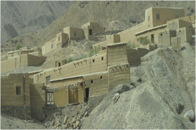
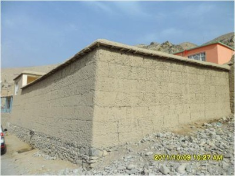
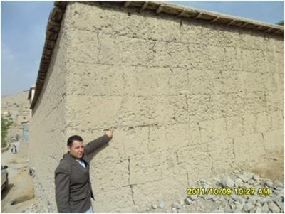
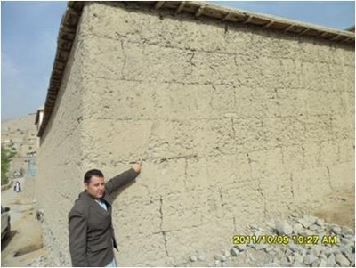

Rammed earth [ETR]
Wall construction of earth which is compacted by hand or mechanically into formwork that is then removed and the wall allowed to dry. This technique makes it possible to build monolithic walls in compacted earth.

Rammed earth construction in Bamyan Province, Afghanistan (Aga Khan Development Network)

Rammed earth walls are constructed using local soil mixed with pebbles and water. The mix is compacted in wooden formwork (made of planks at regular intervals) to form monolithic walls (Aga Khan Development Network).
 

Rammed earth construction, Tajikistan (J. Niyazov)